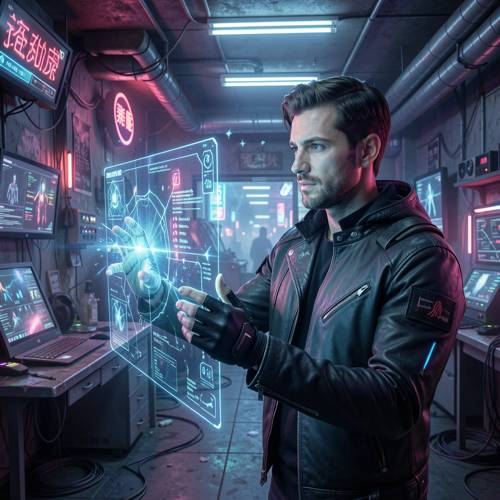

Style — Please generate a picture of a man touching an unstable holographic pr
Please generate a picture of a man touching an unstable holographic projection with his hands without sensing gloves in a cyberpunk-style room.

Direct — one call, no iterationContinuum — Kimi K3 + FLUX.2-klein-9B
Judge — Direct
PASSStyle — The image is set in a room filled with neon signs featuring what appear to be Asian characters, multiple computer monitors, exposed pipes and wiring, and a dark, gritty aesthetic dominated by blue and pink neon lighting. This combination of elements is characteristic of the cyberpunk style.
PASSAction - Hand (Character/Anthropomorphic) — A man is depicted with his hands positioned around a glowing, translucent screen. His right hand is outstretched with fingers spread, appearing to touch the surface of the holographic projection, which glows brightly at the point of contact. His left hand is held slightly below, also oriented towards the screen. The visible parts of his hands and fingers are well-formed without any anatomical distortions.
PASSCompound - Imagination — The image shows a man physically interacting with a floating, transparent holographic projection that displays data and graphs. This act of touching a non-physical light projection is an imaginative concept that does not occur in reality.
FAILGrammar - Negation — The prompt specifies that the man should be 'without sensing gloves'. The man in the image is clearly wearing black, fingerless gloves on both of his hands. This directly contradicts the negative instruction in the prompt.
Judge — Continuum
PASSStyle — The image displays a room with features characteristic of the cyberpunk style, including numerous computer screens, exposed cables, and prominent purple and blue neon lighting.
PASSAction - Hand (Character/Anthropomorphic) — The image shows a man with his hands positioned around a holographic projection. His left hand is partially inside the projection, giving the impression of touching it. Both hands are fully rendered with five fingers each and no visible distortions.
PASSCompound - Imagination — The central subject is a man interacting with a holographic projection of a globe. His hand appears to be passing through the projection, which is an action not possible in reality as holograms are made of light.
PASSGrammar - Negation — The man in the image is shown interacting with the hologram using his bare hands; he is not wearing any type of gloves, including sensing gloves.
What the agent did
Thinking
Generate with flux2-klein.
Step 1 — `generate_image`
{
"model": "flux2-klein",
"prompt": "Cyberpunk-style room interior, a man standing and reaching out with both bare hands (no gloves) to touch a flickering, unstable holographic projection floating in front of him. The hologram is a glitching translucent blue-cyan wireframe globe with distortion artifacts, scan lines, and pixelation fragments breaking apart where his fingers make contact. Neon purple and magenta lighting, dark room with glowing circuit panels, cables, and monitors in the background, volumetric haze, cinematic lighting, detailed sci-fi atmosphere."
}
Result img_0
Thinking
The image looks good: man, bare hands touching glitching hologram, cyberpunk room. All elements present. Mark best and stop.
Model
The first generation already captures all the requested elements well: a man in a cyberpunk room (neon purple/magenta lighting, cables, monitors, circuit panels) reaching out with both bare hands — no gloves — to touch a glitching, unstable holographic globe with pixelated fragments breaking apart at the contact points.
Step 2 — `mark_best`
{
"image": "img_0",
"reason": "All prompt elements present and correct: bare-handed man touching an unstable, glitching hologram in a cyberpunk room."
}
Model
The image is complete and matches your request: - **The man** — shown in a black leather jacket, reaching out with both hands - **Bare hands, no gloves** — clearly visible fingers making contact with the hologram - **Unstable holographic projection** — a translucent wireframe globe that's glitching, with scan lines and pixel fragments scattering and breaking apart where his hands touch it - **Cyberpunk-style room** — neon purple and magenta lighting, hanging cables, glowing monitors, and circuit-board wall panels No further edits needed — the marked image is ready.